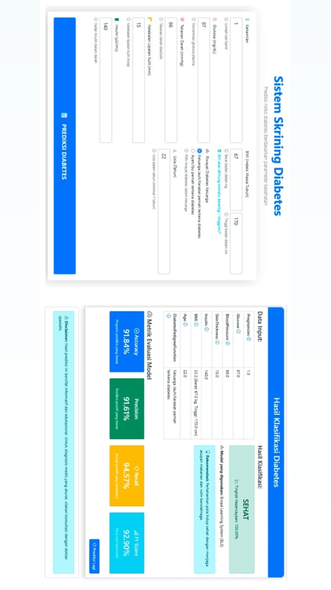
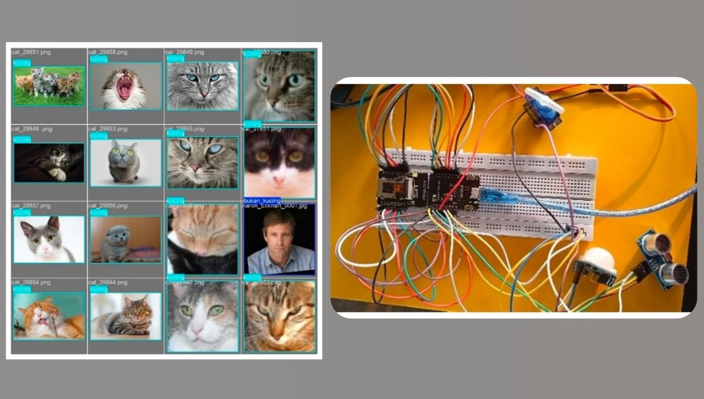
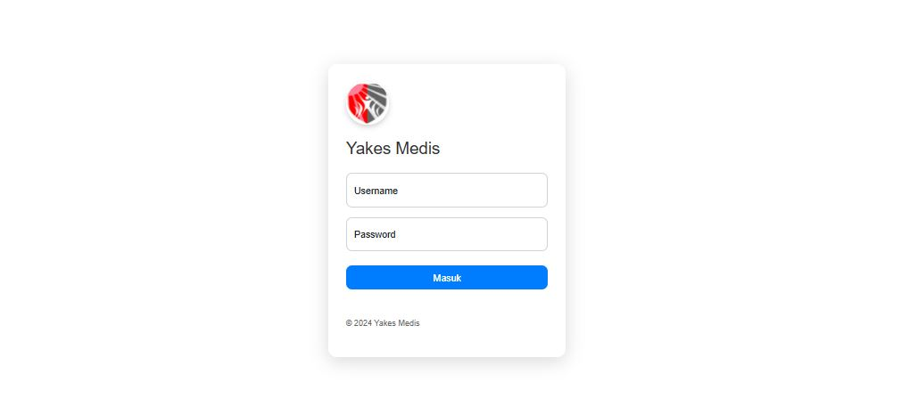
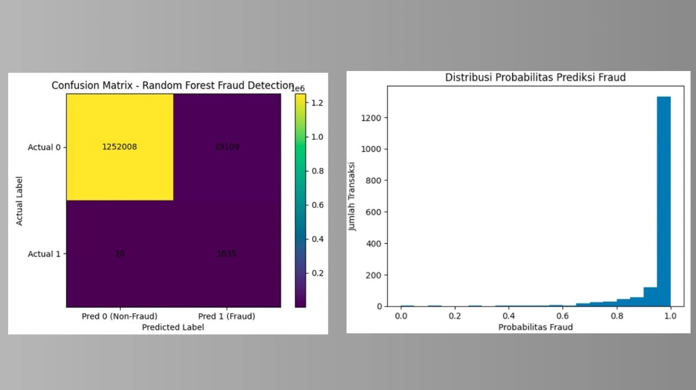
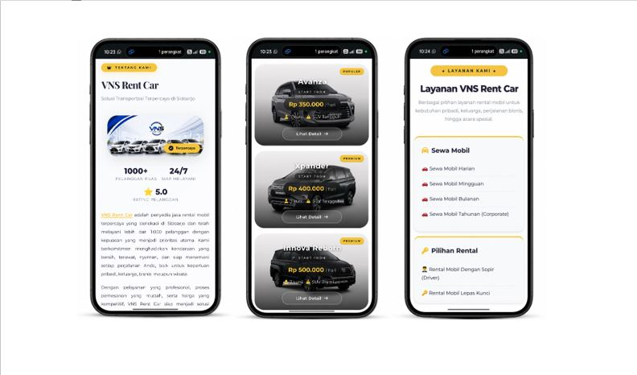
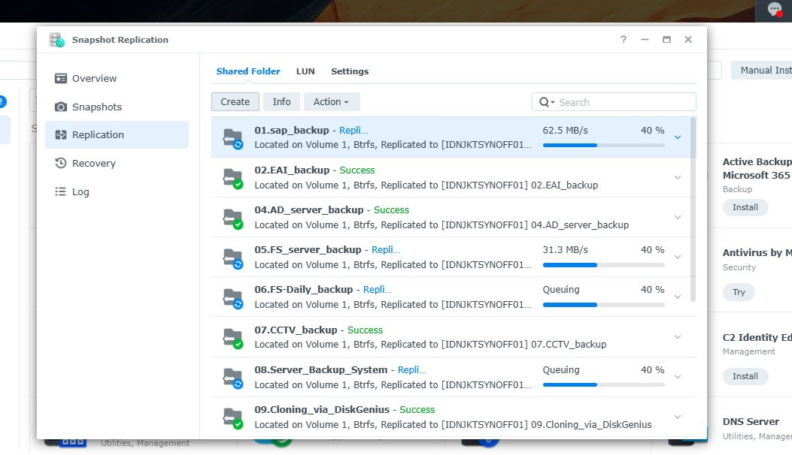

Projects
Proyek-proyek yang telah dikerjakan
Machine Learning

Klasifikasi Risiko Diabetes Berbasis Broad Learning System dan SMOTE-ENN
Mengklasifikasikan risiko diabetes menggunakan Broad Learning System yang
dikombinasikan dengan teknik oversampling SMOTE-ENN untuk menangani ketidakseimbangan data. Dilakukan
evaluasi performa model menggunakan metrik accuracy, precision, recall, dan F1-score serta
diimplementasikan kedalam sebuah web flask. Berhasil menunjukan hasil akhir Akurasi sebesar 92.97%.
Python
Classification
Pandas
NumPy
SMOTE-ENN
Scikit-learn
AIOT

Sistem Smart Cat Feeder berbasis AI dan IoT
Dirancang untuk mengotomatisasi manajemen pemberian pakan kucing secara cerdas dan
efisien. Menggunakan ESP32-CAM sebagai mikrokontroler utama sekaligus modul kamera, sistem ini
mengintegrasikan model Deep Learning YOLOv8 untuk mengenali kehadiran kucing secara akurat. Fitur utama
meliputi pemantauan kondisi pakan melalui sensor ultrasonik, deteksi aktivitas sekitar via sensor gerak,
serta kendali manual melalui Telegram Bot. Proyek ini telah sukses diimplementasikan dan diuji secara
menyeluruh serta mendapatkan akurasi deteksi AI yang tinggi.
ESP32-CAM
Yolov8
Ultrasonic Sensor
Telegram Bot
Arduino
Web Development

Yakes Medis Website– Manajemen data pasien
Pengembangan aplikasi website rekam medis pasien dengan CRUD data dummy yang
mengusung nama yayasan kesehatan telkom. Dirancang untuk mensimulasikan sistem manajemen data pada
lingkungan Yayasan Kesehatan Telkom. Sistem mencakup pengelolaan data pasien, data obat, riwayat medis,
serta laporan rekam medis berupa pdf, antarmuka disusun menggunakan PHP native dengan database MySQL untuk
mendukung efisiensi operasional pengguna.
PHP
MySQL
HTML/CSS
Bootstrap
JavaScript
Unsupervised Learning

Dashboard Jaringan Menara BTS dengan menggunakan Tableau
Berhasil membangun dashboard interaktif untuk mendukung pengambilan keputusan pada
performa jaringan menara tower BTS. Terdiri dari beberapa visualisasi karakteristik pengguna dalam jangka
waktu satu tahun dengan jumlah data performa jaringan lebih dari 10 juta data. Proses mencakup
preprocessing data mentah, pemilihan model clustering K-Means, ekspor dataset insight hasil preprocessing,
dan interpretasi hasil cluster kedalam sebuah aplikasi Tableau.
Python
PyCaret
Big Data
Matplotlib
Tableau
Pandas
Machine Learning

Analisis penipuan pada riwayat transaksi keuangan berbasis Random Forest dan
PySpark
Menganalisis lebih dari 6,3 juta data transaksi keuangan pada dataset PaySim untuk
mendeteksi aktivitas mencurigakan menggunakan PySpark. Proses mencakup data cleaning, transformasi fitur,
normalisasi data, serta penanganan ketidakseimbangan kelas menggunakan teknik class weight pada algoritma
Random Forest. Model yang dibangun berhasil mencapai akurasi 98,49%, F1-Score 99,13%, dan Recall Fraud
99,39%, sehingga mampu mendeteksi sebagian besar transaksi fraud dengan tingkat kesalahan yang sangat
rendah.
Python
Classification
PySpark
Big Data
Matplotlib
Pandas
Web Development

VNS Rent Car Sidoarjo - Web Manajemen Rental Mobil
Website VNS Rent Car berhasil dirancang dan dikembangkan sebagai platform digital
yang memudahkan pelanggan dalam melihat informasi layanan, memilih kendaraan, serta melakukan pemesanan
secara cepat dan efisien. Dengan tampilan yang responsif, fitur yang lengkap, dan kemudahan akses melalui
berbagai perangkat, website ini mampu meningkatkan kualitas pelayanan serta memberikan pengalaman pengguna
yang lebih baik. Implementasi website tersebut turut berkontribusi dalam meningkatkan kepercayaan
pelanggan dan berhasil melayani lebih dari 1.000 pelanggan dengan tingkat kepuasan yang tinggi.
Website
HTML
CSS
JS
Synology Data Back-up

Otomatisasi Backup Data NAS ke NAS (Synology)
Sistem replikasi dan backup data skala enterprise dirancang untuk mengamankan file
dari Data Center (Synology A) ke perangkat penyimpanan sekunder (Synology B) secara otomatis. Implementasi
ini memanfaatkan fitur Snapshot Replication dengan basis file system Btrfs untuk menjalankan incremental
backup yang efisien. Guna menjaga stabilitas operasional, jalur transfer data diisolasi menggunakan Link
Aggregation (jalur IP privat khusus), sehingga pengiriman data berkapasitas besar (Terabytes) berjalan
sangat cepat tanpa membebani jaringan end-user utama. Solusi ini menjamin redundansi data, kemudahan
pemulihan (recovery), dan memastikan kelangsungan bisnis berjalan dengan optimal dan aman.
Synology NAS
Snapshot Replication
IT infrastructure
Data Center